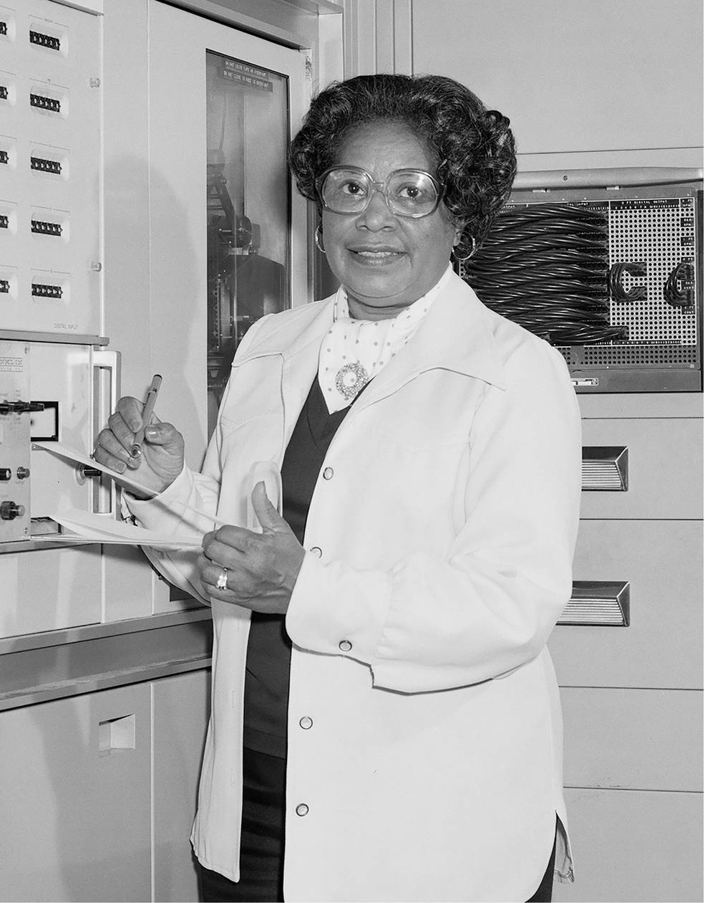

Mary W. Jackson
Mathematician and Aerospace Engineer
NASA's first Black female engineer
Photo Courtesy of NASA
Time Line
- 1921: Born in Hampton, Virginia.
- 1937: Graduated with High Honors from George P. Phenix.
- 1942: Graduated with Dual Bachelor's degrees in mathematics and physical science from Hampton Institute.
- 1951: Employed at National Advisory Committee for Aeronautics (NACA, the predecessor agency to NASA).
- 1958: Became NASA’s first black female engineer and co-authored her first report, 'Effects of Nose Angle and Mach Number on Transition on Cones at Supersonic Speeds'.
- 1953: Moved to the Compressibility Research Division.
- 1960's: Studied and published several papers on skin friction at supersonic speeds.
- 1978: Jackson changed positions to be a human resources administrator where she worked hard to impact the hiring and promotion of the next generation of NASA’s female mathematicians, engineers, and scientists.
- 1985: Retired from the NASA Langley Research Center.
- 2005: Died at age 83 in Hampton, Virginia
- 2016: Movie 'Hidden Figures' made about her story and the groundbreaking contributions she made to NASA.
Read more about her and her amazing career here on Biography.com and here on NASA.gov.